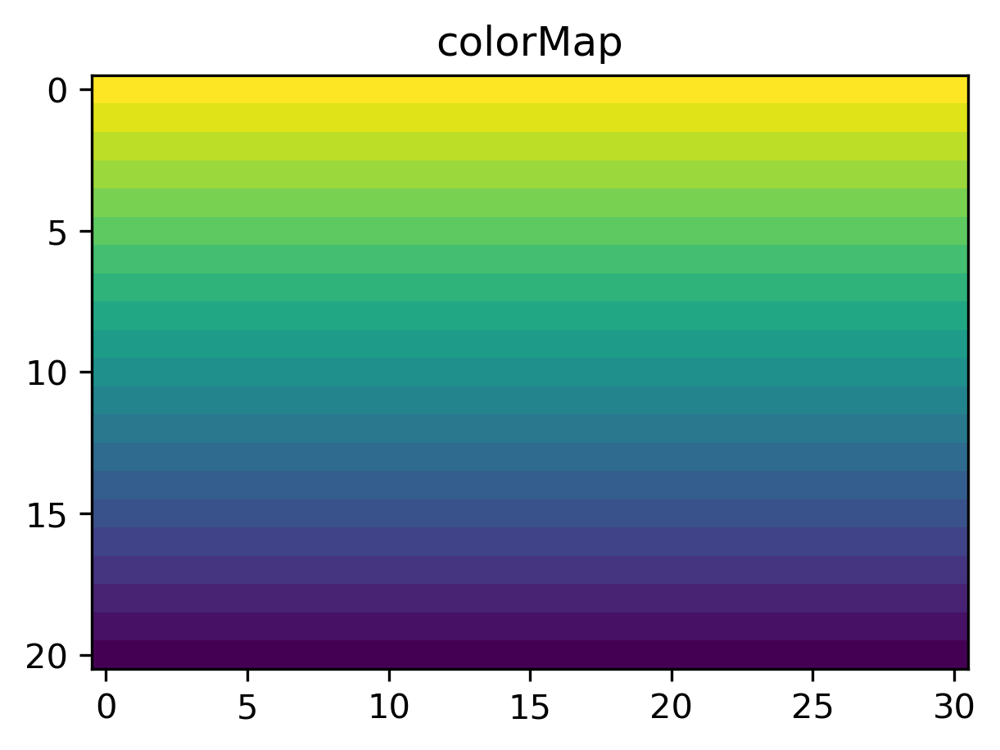

2D diffusion using FEM
Problem description:
We will solve for the steady-state temperature field within a unit square box. The box includes a rectangular region in the center, where conductivity is higher. If you want geological context, think of it as a salt diapir ;)
Setup:
center coordinate: 0,0 length in x and : 1 top temperature: 0 bot temperature: 1 thermal conductivity: 1 box conductivity: 5
[1]:
import numpy as np
from tabulate import tabulate
from scipy.sparse.linalg import spsolve
from scipy.sparse import csr_matrix
from scipy import sparse
import matplotlib as mpl
import matplotlib.pyplot as plt
mpl.rcParams['figure.dpi']= 300
[2]:
#geometry
lx = 2
ly = 1
nx = 31
ny = 21
nnodel = 4
dx = lx/(nx-1)
dy = ly/(ny-1)
w_i = 0.2 # width inclusion
h_i = 0.2 # heigths inclusion
# model parameters
k1 = 1
k2 = 5
Ttop = 0
Tbot = 1
nex = nx-1
ney = ny-1
nnod = nx*ny
nel = nex*ney
GCOORD = np.zeros((nnod,2))
T = np.zeros(nnod) #initial T
id = 0
# global coordinates
for i in range(0,ny):
for j in range(0,nx):
GCOORD[id,0] = -lx/2 + j*dx
GCOORD[id,1] = -ly/2 + i*dy
id = id + 1;
# FEM connectivity
EL2NOD = np.zeros((nel,nnodel), dtype=int)
for iel in range(0,nel):
row = iel//nex
ind = iel + row
EL2NOD[iel,:] = [ind, ind+1, ind+nx+1, ind+nx]
# Gauss integration points
nip = 4
gauss = np.array([[ -np.sqrt(1/3), np.sqrt(1/3), np.sqrt(1/3), -np.sqrt(1/3)], [-np.sqrt(1/3), -np.sqrt(1/3), np.sqrt(1/3), np.sqrt(1/3)]]).T.copy()
Now we create our shape functions
[3]:
def shapes():
#shape functions
N1 = 0.25*(1-xi)*(1-eta)
N2 = 0.25*(1+xi)*(1-eta)
N3 = 0.25*(1+xi)*(1+eta)
N4 = 0.25*(1-xi)*(1+eta)
N = np.array([N1, N2, N3, N4])
# and their derivatives
dNds = np.zeros((2,4))
dNds[0,0] = 0.25*(-1 + eta) #derivative with xi
dNds[1,0] = 0.25*(xi - 1) #derivative with eta
#derivatives of second shape function with local coordinates
dNds[0,1] = 0.25*(1 - eta)
dNds[1,1] = 0.25*(-xi - 1)
#derivatives of third shape function with local coordinates
dNds[0,2] = 0.25*(eta + 1)
dNds[1,2] = 0.25*(xi + 1)
#derivatives of fourth shape function with local coordinates
dNds[0,3] = 0.25*(-eta - 1)
dNds[1,3] = 0.25*(1 - xi)
return N, dNds
And do the element assembly and integration
[4]:
Rhs_all = np.zeros(nnod)
I = np.zeros((nel,nnodel*nnodel))
J = np.zeros((nel,nnodel*nnodel))
K = np.zeros((nel,nnodel*nnodel))
for iel in range(0,nel):
ECOORD = np.take(GCOORD, EL2NOD[iel,:], axis=0 )
Ael = np.zeros((nnodel,nnodel))
Rhs_el = np.zeros(nnodel)
for ip in range(0,nip):
# 1. update shape functions
xi = gauss[ip,0]
eta = gauss[ip,1]
N, dNds = shapes()
# 2. set up Jacobian, inverse of Jacobian, and determinant
Jac = np.matmul(dNds,ECOORD) #[2,nnodel]*[nnodel,2]
invJ = np.linalg.inv(Jac)
detJ = np.linalg.det(Jac)
# 3. get global derivatives
dNdx = np.matmul(invJ, dNds) # [2,2]*[2,nnodel]
# 4. compute element stiffness matrix
Ael = Ael + np.matmul(dNdx.T, dNdx)*detJ*k1 # [nnodel,1]*[1,nnodel]
# 5. assemble right-hand side
Rhs_el = Rhs_el + np.zeros(4)
# assemble coefficients
I[iel,:] = (EL2NOD[iel,:]*np.ones((nnodel,1), dtype=int)).T.reshape(nnodel*nnodel)
J[iel,:] = (EL2NOD[iel,:]*np.ones((nnodel,1), dtype=int)).reshape(nnodel*nnodel)
K[iel,:] = Ael.reshape(nnodel*nnodel)
Rhs_all[EL2NOD[iel,:]] += Rhs_el
A_all = sparse.csr_matrix((K.reshape(nel*nnodel*nnodel),(I.reshape(nel*nnodel*nnodel),J.reshape(nel*nnodel*nnodel))),shape=(nnod,nnod))
Boundary conditions and solution
[5]:
# indices and values at top and bottom
i_bot = np.arange(0,nx, dtype=int)
i_top = np.arange(nx*(ny-1),nx*ny, dtype=int)
Ind_bc = np.concatenate((i_bot, i_top))
Val_bc = np.concatenate((np.ones(i_bot.shape)*Tbot, np.ones(i_top.shape)*Ttop ))
# smart way of boundary conditions that keeps matrix symmetry
Free = np.arange(0,nnod)
Free = np.delete(Free, Ind_bc)
TMP = A_all[:,Ind_bc]
Rhs_all = Rhs_all - TMP.dot(Val_bc)
# solve reduced system
T[Free] = spsolve(A_all[np.ix_(Free, Free)],Rhs_all[Free])
T[Ind_bc] = Val_bc
# plottin
T = T.reshape((ny,nx))
fig = plt.figure(figsize=(6, 3.2))
ax = fig.add_subplot(111)
ax.set_title('colorMap')
plt.imshow(T)
ax.set_aspect('equal')

[6]:
print(is_sym)
True
[ ]:
[ ]:
[ ]:
[ ]:
[ ]:
[ ]:
[ ]: